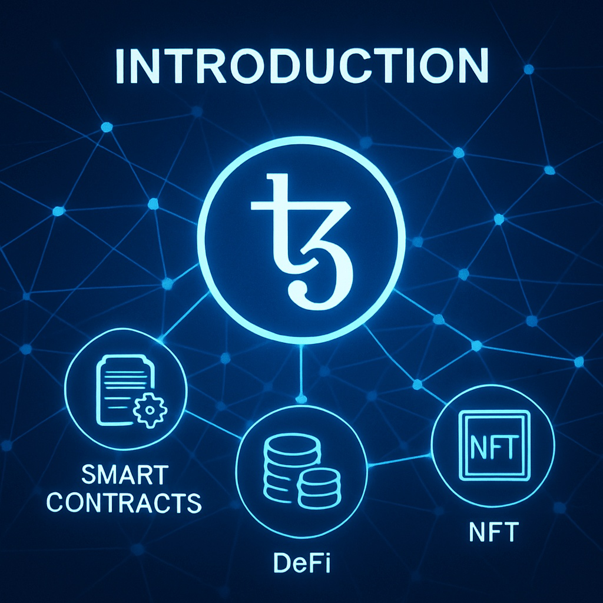
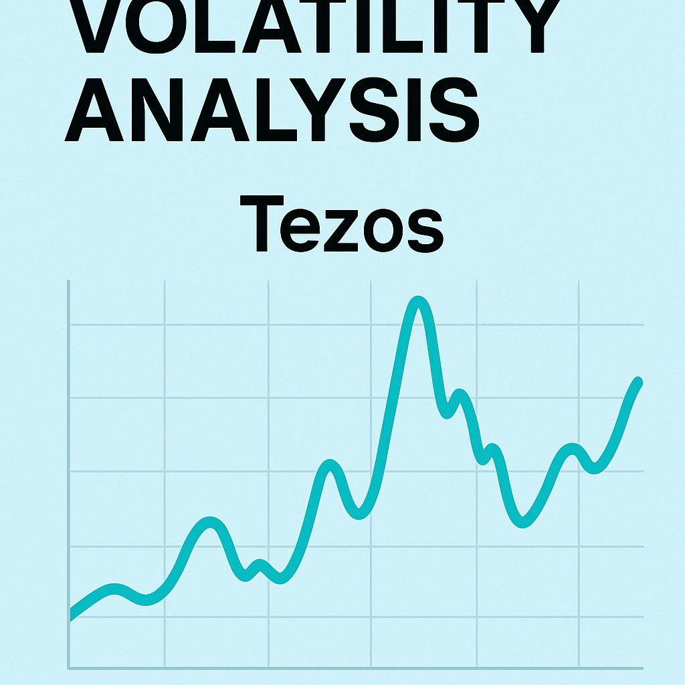

Tezos Price Prediction for End of 2025: In-Depth Analysis and Insights
The information in this article is provided for educational purposes only and is not investment advice. Cryptocurrency investments carry risks.
Introduction
As of August 20, 2025, 01:13 AM EEST, Tezos (XTZ) is trading at approximately $1.25, reinforcing its position as a leading self-upgrading, energy-efficient layer-1 blockchain. Developed by Arthur and Kathleen Breitman, Tezos supports decentralized applications (dApps), NFTs, and smart contracts with a unique on-chain governance model that allows seamless protocol upgrades. Its eco-friendly proof-of-stake mechanism and growing adoption in art, gaming, and DeFi make it a notable player in the blockchain space. This article provides a comprehensive analysis of XTZ’s price outlook for the end of 2025, exploring bullish and bearish scenarios, key growth drivers, and potential risks based on current market trends and ecosystem developments.
Current Situation
As of August 20, 2025, Tezos’s price is around $1.25, reflecting a 19% increase from June 2025, when XTZ traded at $1.05. Over the past 30 days, Tezos has shown resilience, with 55% of days closing in the green and a moderate volatility of 5.6%. The Fear and Greed Index at 68 indicates growing investor confidence, driven by Tezos’s adoption in NFT marketplaces, gaming ecosystems, and partnerships with institutions like Ubisoft and Société Générale. Over the past year, XTZ’s price has risen from $0.75, achieving a 66.7% gain. Since 2020, when XTZ was valued at $0.40, it has grown by 212.5%, fueled by its self-upgrading protocol and expanding ecosystem.
Price Predictions for End of 2025
Analyst forecasts for Tezos by December 2025 vary based on market conditions. Bearish scenarios suggest a potential decline to $0.85 if a projected 30–50% market correction occurs in early 2025. Moderate projections estimate XTZ stabilizing between $1.40 and $1.80, supported by steady adoption in NFTs, DeFi, and gaming. Bullish forecasts predict XTZ could reach $2.00–$2.50, particularly if a market rebound occurs between February and April 2025. Some analysts, referencing trends from sources like Coinpedia, project Tezos hitting $2.00 by December 2025 if adoption in art and gaming ecosystems accelerates.
Factors Driving Price Growth
- NFT and Art Market Adoption: Tezos’s low-cost, energy-efficient blockchain supports thriving NFT marketplaces like Objkt and Hic et Nunc, driving XTZ demand.
- Gaming Ecosystem: Partnerships with gaming giants like Ubisoft for NFT-based games enhance Tezos’s utility.
- Institutional Partnerships: Collaborations with financial institutions like Société Générale for tokenized assets bolster Tezos’s real-world adoption.
- Market Rally: A projected cryptocurrency market surge in 2025, particularly from February to April, could create a favorable environment for XTZ’s price growth.
- Self-Upgrading Protocol: Tezos’s on-chain governance allows seamless upgrades, maintaining its competitiveness and attracting developers.
Risks and Downward Factors
- Market Volatility: A projected 30–50% market correction in early 2025 could exert downward pressure on XTZ’s price, impacting investor sentiment.
- Regulatory Risks: Stricter global regulations on cryptocurrencies could limit Tezos’s accessibility and adoption, particularly for tokenized assets.
- Competition: Rival layer-1 blockchains like Ethereum, Solana, and Avalanche could challenge Tezos’s market share if they gain more traction in NFTs and DeFi.
Volatility Analysis
From July to August 2025, Tezos’s price rose from $1.05 to $1.25, marking a 19% gain with a volatility of 5.6%, indicating relative stability compared to historical trends. Annual growth of 66.7% underscores XTZ’s strong performance. Technical indicators, including bullish trends in the 50-day and 200-day Exponential Moving Averages (EMAs), suggest continued upward potential. A projected market recovery from February to April 2025 could further support price growth, particularly as Tezos expands its role in NFTs, gaming, and tokenized assets. Its energy-efficient design and governance model position it well for sustained adoption and value appreciation.
Conclusion
By the end of 2025, Tezos’s price is projected to range between $1.40 and $2.00, with the potential to reach $2.50 in a bullish market driven by NFT adoption, gaming ecosystems, and institutional partnerships. However, investors should remain cautious of market volatility, regulatory uncertainties, and competition from other blockchains. Thorough research and risk management are essential before investing in Tezos.